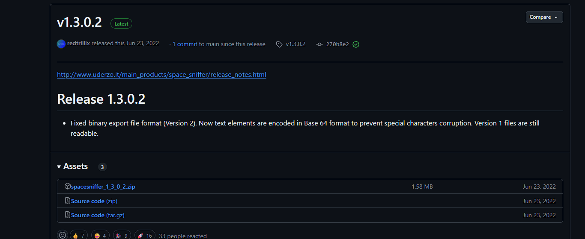
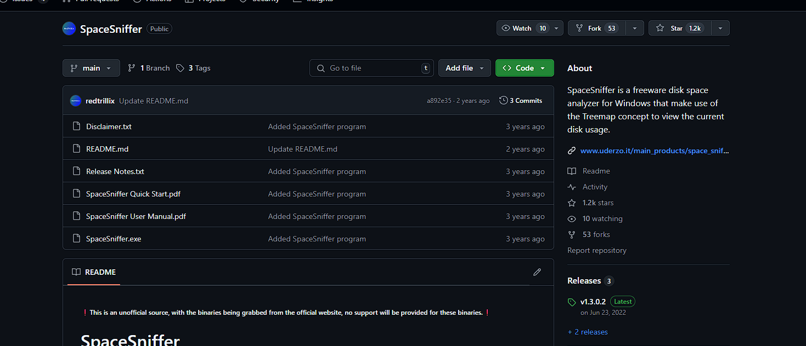

SpaceSniffer是Uderzo Software推出的一款免费软件，用于Microsoft Windows平台的磁盘空间分析。它使用矩形式树状结构绘图法来可视化磁盘的使用情况。
SpaceSniffer 由意大利 Uderzo Software（由 Umberto Uderzo运营）开发，于 2009 年首次发布
特性
SpaceSniffer 是在Windows平台上运行的单一文件可执行程序， 程序是免安装的，完全免费 。使用此程序可以很方便地查出某些对磁盘大量占用的程序。[2]
特点包括：
使用树形图显示磁盘容量的分配方式。
过滤器（基于文件名、日期、大小等）
用户选择的颜色可以与不同类型的文件相关联。
支持 NTFS可选数据流。
支持命令行。
反应
该程序受到了编辑和用户的好评[3]。 PCWorld给出了“推荐下载”的评价 [4] ，Freewaregenius.com 称其为“一个制作精良的程序，简单直观、优雅且非常有用”[5]。 一些评论者和用户指出，树形图有时“可能有点让人不知所措”，“混乱且不必要的复杂”，但结论是它是“有效的”。 [6]
类似的程序
用于Windows： WinDirStat 、SequoiaView
用于KDE： KDirStat[7] [8]
用于GTK： GdMap
用于Mac OS X：Disk Inventory X [9]
SpaceSniffer官网:https://sourceforge.net/projects/spacesniffer/
进入SpaceSniffer官网后点击Downloda直接下载软件无需安装
SpaceSniffer Github链接
(2)